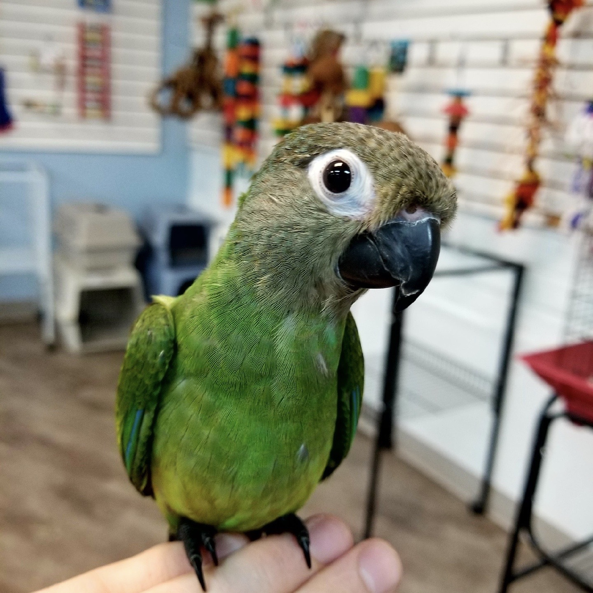
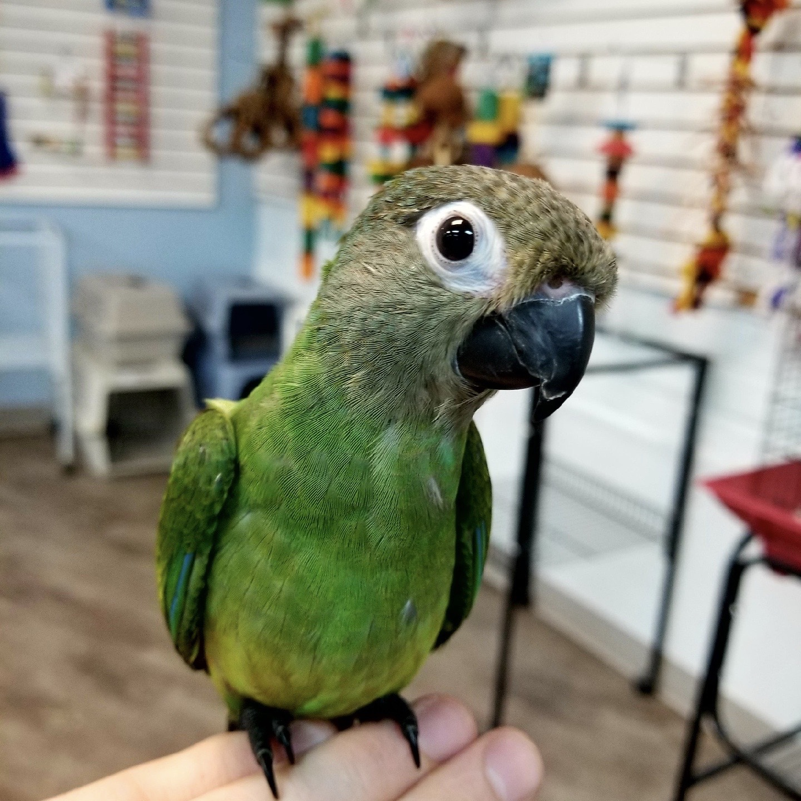

I'm Joscelyn Rae James
Backgroud
I go by Jo or Josce for short, but I will respond to pretty much anything. I am Colorado born and raised. I am the youngest of my family with 3 older brothers and an older sister. Two of my brothers went through Galvanize and are web developers for different companies; they helped spark my interest in coding and Galvanize. Then I have my crazy dog, Missy(pictured below). She is an Aussie that loves to talk and go for car rides. Maybe I will get to bring her in one day! I have an amazingly weird boyfriend with an equally weird and amazing bird(also pictured below). You will probably get to see him around galvanize.
 

My Coding Background
I have been seriously coding sense the beginning of this year. I dabbled in Codecadamy a couple years back and never thought this would be a career path I could do. Everything I learned wasn't sticking and I instantly thought that it was because of me and my brain wasn’t capable of learning these languages. It wasn’t until I got a push from my boyfriend and one of my brothers to learn more. They really believed I would enjoy programming and love it as my job. I have been in the service industry for all of my career and I think now is the time for change.
Hobbies
During my free time, I love to be in the mountains. Whether it's camping, hiking, ATV, off roading, snowboarding, or kayaking, I do it all. I own a 2003 Toyota 4runner that helps me on all of these adventures. I also love to play video games. I lost about 8 years of my life to a World Of Warcraft addiction(For the Horde!). With that being said, I love RPGs and games with a good story line and have endless things for me to collect and waste hours upon hours on :).